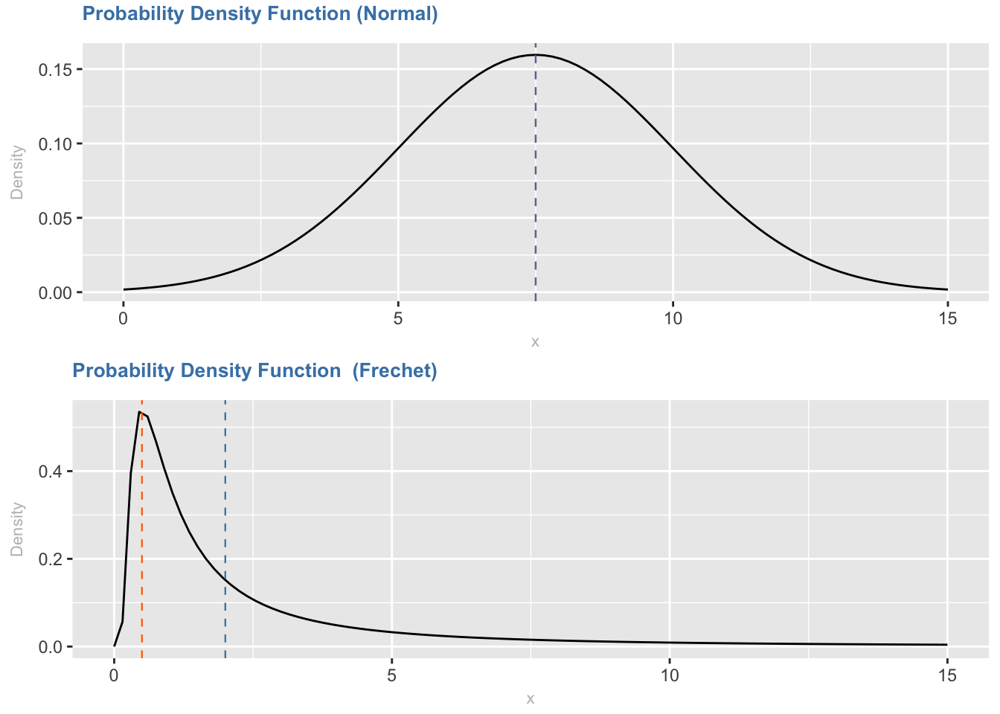

Chapter6 Conclusion
6.1 Main insights
VC investment in Portugal relies, mostly on public funds with an absence of evidence of return of investment adjusted to risk.
Comparing, there are few “high growth companies” and they seem to be in economic areas different that the invested ones. Unlike the idea that all VC deals are different, data show that same degree and forms of investments are used, not in equity instruments, rather in debt instruments. The use of typical instruments of public liability company, as securities are not used, besides issuance of shares.
There is also no evidence that the change on share capital requirement created a significant change in the number of companies.
In spite of a lot of promotion of “startups”, results are yet to be demonstrated.
The last of buy side also seems to be a contact, where exists are mostly trough outside countries. The concentration of the market share in few players (most being public funded) also contracts with an idea of market based, but rather policy based. Incentives are drawn by regulation (and funding of State), not market.
The rolling of this assets seems also to be an issue, where no cash (as a fungible and more liquid asset) seems to be realized, rather selling stats to other funds, for reimbursement of the first.
Most observations are not even distributed, meaning that a small percentage have a higher weight than the most frequent ones. It´s a typical case of extreme value distributions, with highly skewed distributions.
6.2 According to available data, account should be taken:
No IPO’s (between the period 2007 to 2015 there are 0 occurrences of this form of disinvestment), even considering the total capital (venture capital and private equity), being able to conclude that there is a weak depth of Capital markets;
The Government (directly and indirectly) as one of the major players, where in the investment policy is visible the limitations on the instruments used, as well as on the location and investment area. It can be stated that the investment, is in line with structural support funds (Compe case, QREN and currently P2020).
6.2.1 Future work
